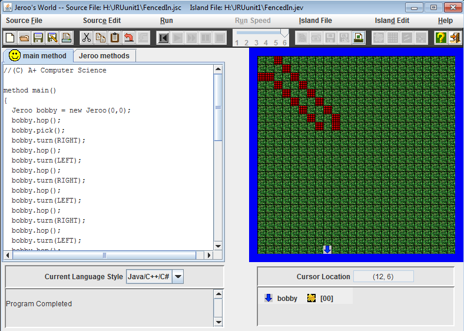
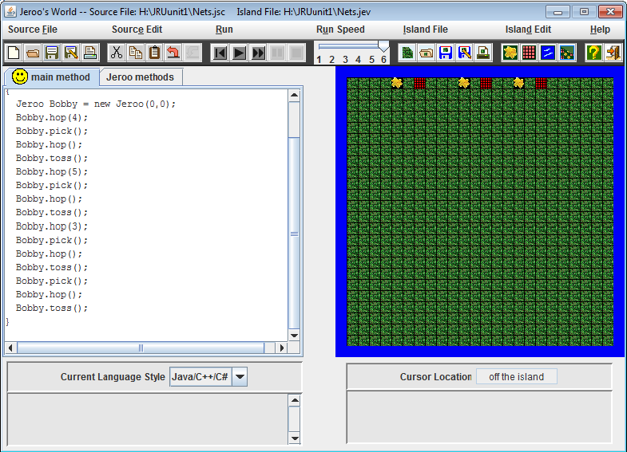
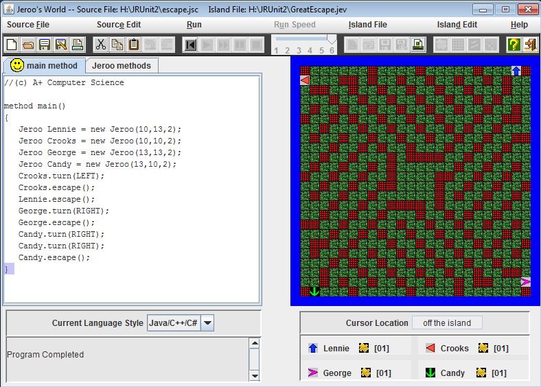
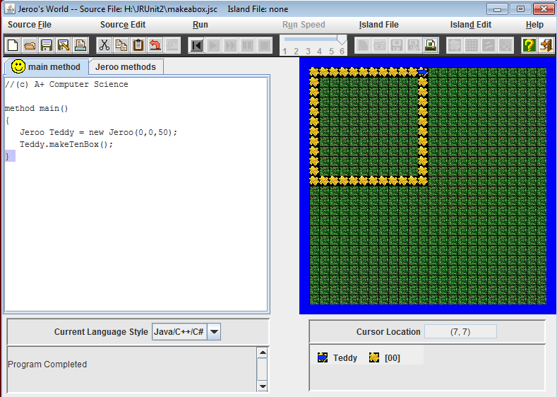
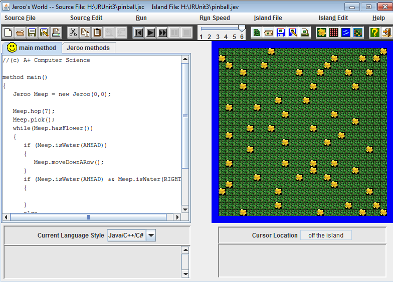
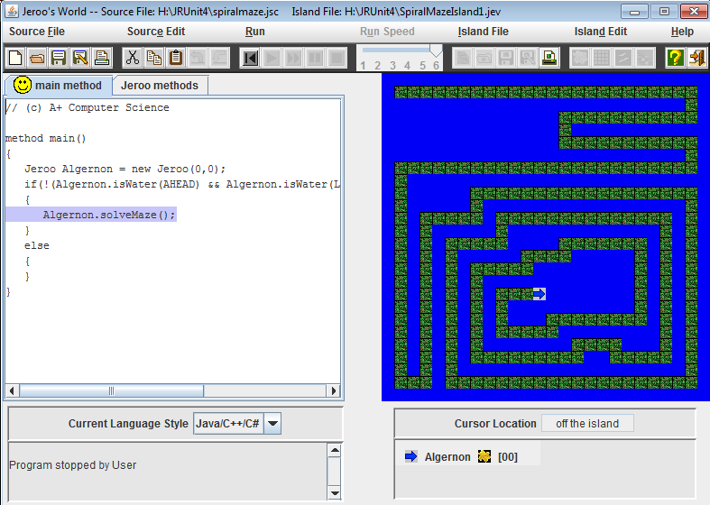
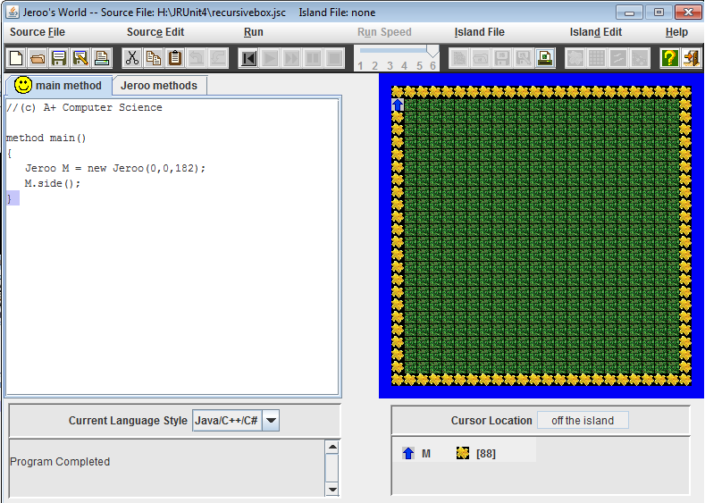

UNIT 1
Fenced In
 Fenced in was a problem solving task, the Jeroo was trapped in an area made entirely out of nets. We had to use commands new to us and move the Jeroo safely to the end of the area and toss a flower to diffuse the trap thus freeing the Jeroo. The code for this one was relatively basic, no loops or methods were used, just repition of code. ¯\_(ツ)_/¯
Nets

This one was a problem requiring us to diffuse different nets using the flowers in front of us. So I did was find a code that worked then copied and pasted it because it would apply to all of the scenarios. No loops, this was still my earlier stages in Jeroo, so I was still unaware of loops, or at least how to make them. ¯\_(ツ)_/¯
UNIT 2
Escape

This one was fun, you have 4 Jeroos trapped inside a box at the center, but conviniently everything is symettrical for all sides.... so all you had to do was find the code that worked for one Jeroo to escape, and apply it to the rest of them. I created a method called escaoe which made it much easier to just put for each Jeroo rather than copy and paste such a large unwieldy chunk of code.
Make A Box

Make a box was entirely made of methods, one method was for planting and hoping, the other for how long each side was, and the last method for compiling everything together. Then I just sent the command to the Jeroo as a single line of code, rather than a large copy and paste one. ¯\_(ツ)_/¯
UNIT 3
Pinball

In Pinball a whole bunch of flowers were scattered all over the map, and your Jeroo had to collect all of them without falling in the water. Now my original code involved detecting which direction the Jeroo was facing and then that would be dependant on the turn. However that code didn't work so I settled for a different method, I instead made a bit of code that ensured the Jeroo would always start on the left side of the island. Then my code works. I had a while loop that checked until water was ahead, then the code stopped. ¯\_(ツ)_/¯
Spiral

This one was mainly methods, what I did was check to see if it was clear ahead, then hop, if it was not clear and there was an obstacle, then turn. This was a spiral so I could just repeat the going in code, then I wuld just turn the Jeroo around and use almost the same code for going out. ¯\_(ツ)_/¯
UNIT 4
Maze

This one was constructed using entirely loops and methods. The loops checked which side had water which dictated which direction to turn. The while loop would stop only when the Jeroo had a flower, there were no flowers on this maze, thus it goes forever. There was a statement to stop the movement, and checked if there was water ahead, left, and right. This worked for all 3 different mazes given to me. So... yeah, my code is not made for one specific maze, it can be applied to all mazes. ¯\_(ツ)_/¯
Recursive Box

This one checked to see if it was clear ahead and planted until it was not, this was similar to the make a box in earlier units, except this one utilized loops and methods more extensively. It's pretty much just a more efficient way of making a box. ¯\_(ツ)_/¯